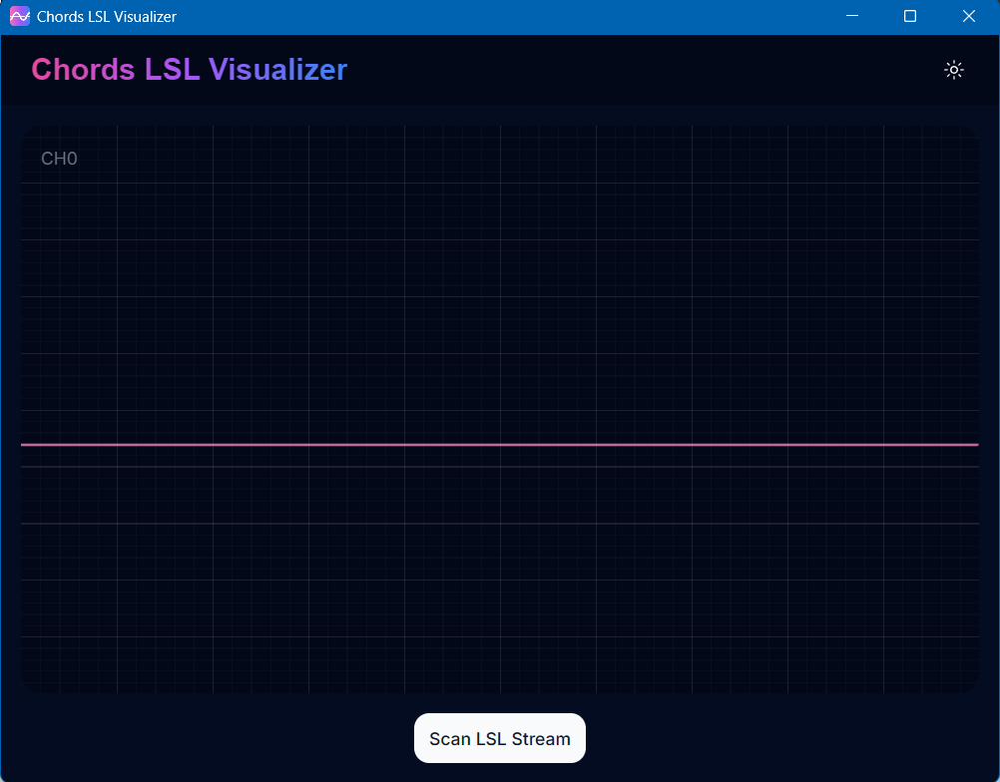
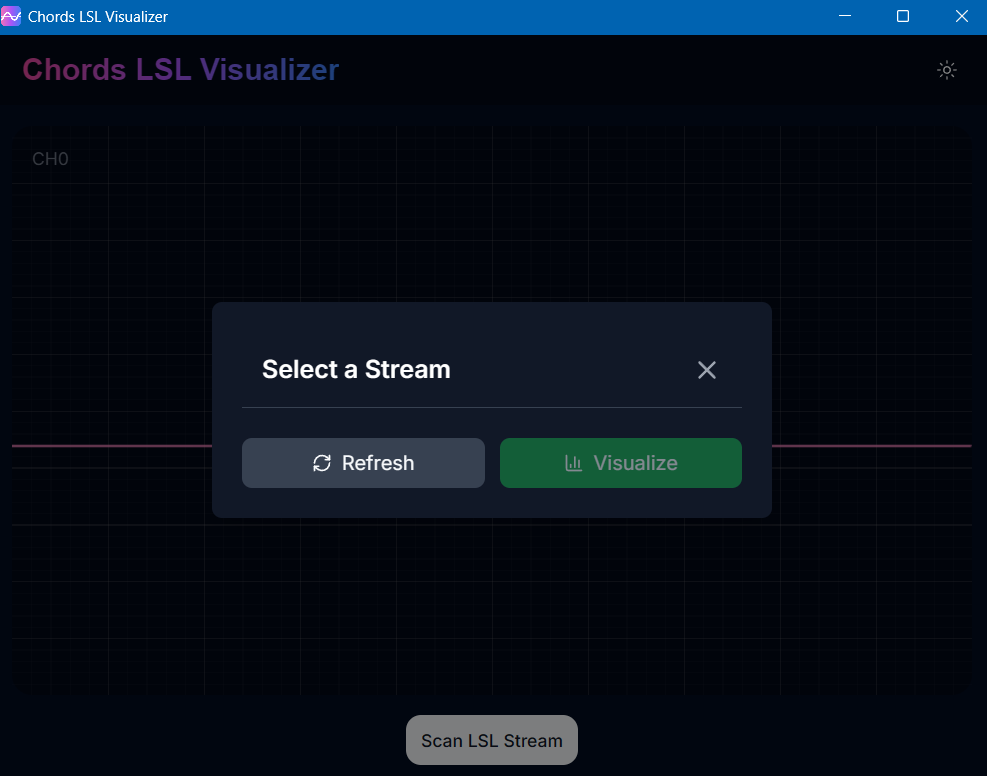
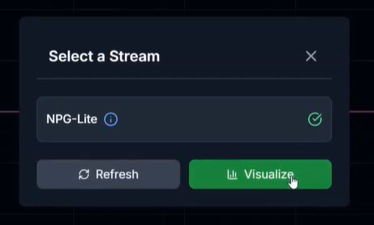
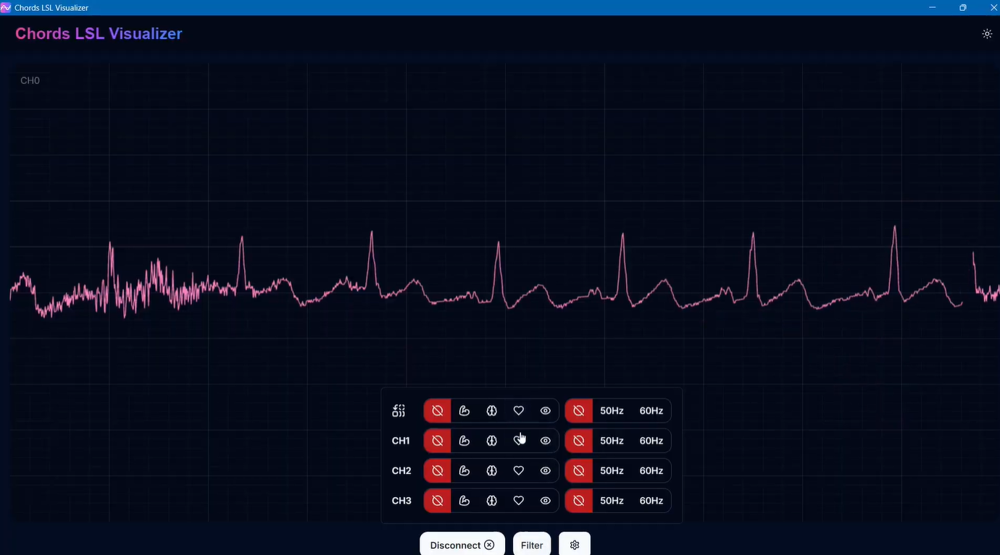
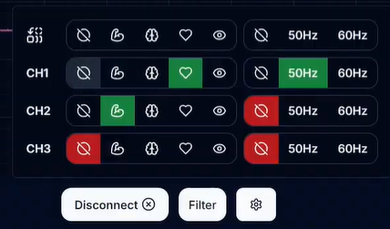
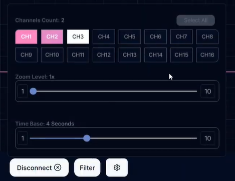

Chords-LSL-Visualizer#
Ringkasan#
Chords-LSL-Visualizer adalah aplikasi grafis open-source berbasis Rust untuk memvisualisasikan sinyal bio-potensial yang di-streaming melalui Lab Streaming Layer (LSL) untuk Chords. Ini dirancang untuk bekerja secara mulus dengan perangkat keras yang kompatibel dengan Chords (seperti Neuro Playground Lite atau perangkat BioAmp lainnya yang menjalankan firmware Chords) dengan berlangganan ke stream LSL mereka dan merender sinyal bio-potensial langsung dalam GUI interaktif.
Dengan Chords-LSL-Visualizer, Anda dapat:
Menemukan stream LSL yang tersedia dari perangkat keras yang terhubung.
Memvisualisasikan sinyal ExG multi-channel (EEG, EMG, ECG, dll.) secara real-time.
Menerapkan filter ke data langsung untuk pengamatan sinyal yang lebih bersih.
Memilih jumlah channel yang ingin Anda visualisasikan.
Kompatibilitas lintas platform: Windows, macOS, dan Linux.

Chords-LSL-Visualizer#
Apa itu Lab Streaming Layer (LSL)?#
Lab Streaming Layer (LSL) adalah protokol open-source dan framework perangkat lunak untuk streaming data yang disinkronkan waktu secara real-time, terutama dalam eksperimen neuroscience dan biomedis.
LSL adalah ekosistem middleware jaringan open-source untuk streaming, menerima, menyinkronkan, dan merekam stream data neural, fisiologis, dan perilaku yang diperoleh dari berbagai perangkat keras sensor.
Untuk mengetahui lebih lanjut tentang LSL klik di sini.
Persyaratan Sistem#
Sistem Operasi: Windows 10+ / macOS 10.15+ / Linux (glibc 2.27+)
Chords LSL Connector menjalankan firmware yang diaktifkan LSL (misalnya, Neuro Playground Lite).
Persyaratan Perangkat Keras#
Kabel USB type-C
Atau repositori firmware Chords Arduino di Chords Arduino Firmware GitHub.
Menyiapkan perangkat keras#
Buat semua koneksi sesuai dengan perangkat keras yang Anda gunakan, termasuk koneksi sensor dengan papan pengembangan, koneksi tubuh dengan sensor, dan koneksi dari papan pengembangan ke laptop Anda.
Instalasi#
Unduh installer dari rilis terbaru: Chords LSL Visualizer Release
Pilih installer untuk OS Anda:
Fedora →
.rpmDebian/Ubuntu →
.debmacOS →
.dmgWindows →
.msiAtau unduh paket sumber untuk membangun sendiri
Jalankan installer untuk OS Anda:
Windows (.msi)
Klik ganda file .msi yang diunduh.
Jika Anda melihat peringatan SmartScreen, klik More Info → Run Anyway.
Lanjutkan melalui wizard installer: Next → pilih lokasi instal → Install → Finish.
Fedora (.rpm)
Buka terminal dan jalankan:
sudo dnf install Chords.LSL.Visualizer-0.1.0-1.x86_64.rpm
Masukkan kata sandi Anda dan konfirmasi instal saat diminta.
Setelah instalasi, luncurkan Chords LSL Visualizer dari menu Applications Anda.
Debian/Ubuntu (.deb)
Buka terminal dan jalankan:
sudo apt install ./Chords.LSL.Visualizer_<version>_amd64.deb
Jika Anda menemukan dependensi yang hilang, jalankan:
sudo apt --fix-broken install
Luncurkan Chords LSL Visualizer
chords-lsl-visualizer
macOS (.dmg)
Klik ganda file Chords.LSL.Visualizer.<version>.dmg yang diunduh.
Ketika Anda melihat peringatan macOS:
“Chords.LSL.Visualizer.<version>.dmg” diunduh dari Internet.
Apakah Anda yakin ingin membukanya?
klik **Open**
Seret Chords LSL Visualizer.app ke folder Applications Anda.
Keluarkan image yang dipasang dan buka aplikasi dari Applications.
(Opsional) Bangun dari sumber
git clone https://github.com/upsidedownlabs/Chords-LSL-Visualizer.git
cd Chords-LSL-Visualizer
npm i
cargo tauri build
Mem-flash Firmware#
Untuk mem-flash firmware: Gunakan NPG Lite Flasher untuk mem-flash firmware yang diinginkan, untuk mengetahui lebih lanjut kunjungi dokumentasi NPG Lite Flasher.
Visualisasi LSL#
Setelah diinstal, ikuti langkah-langkah ini untuk mulai memvisualisasikan sinyal bio-potensial Anda:
Mulai Chords-LSL-Visualizer dan klik Scan LSL Stream. Ini memindai stream LSL aktif yang disiarkan oleh Chords LSL Connector atau firmware kompatibel Anda.

Klik Refresh untuk memperbarui daftar stream yang tersedia.

Pilih perangkat Anda dari daftar dan tekan Visualize.

Setelah stream dimulai, pilih opsi filter Anda (misalnya, 50Hz, 60Hz) sesuai dengan wilayah Anda.


Dari Settings, pilih jumlah channel yang ingin Anda visualisasikan.

Mulai visualisasi real-time sinyal ExG Anda.

Repositori GitHub#
Untuk kode sumber lengkap, pelacakan masalah, dan panduan kontribusi, kunjungi repositori GitHub Chords-LSL-Visualizer.
Anda akan menemukan panduan setup dan dapat melacak pengembangan berkelanjutan - termasuk perbaikan bug dan peningkatan fitur: Chords LSL Visualizer GitHub